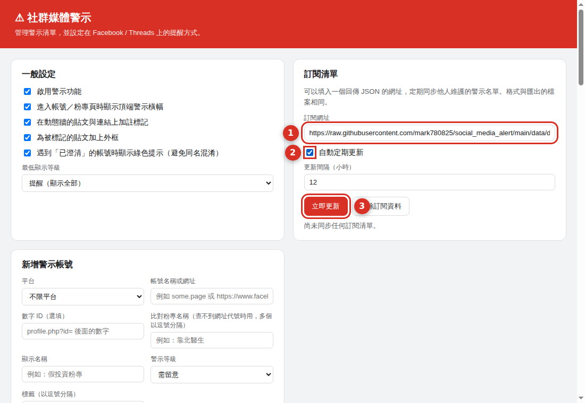

這份清單怎麼運作
-
1
任何人檢舉
填下面的表單，或直接開一則 Issue。重點不是「你覺得它有問題」，而是可以被別人重新查一次的依據：透明度資訊、改名紀錄、同步發文的截圖或連結。
-
2
公開查證
查證過程留在該則 Issue 裡，任何人都能補充或反駁。查證重點是訊號是否可複驗，不是內容立場。判斷不出來的就維持「待查」，不會硬收。
-
3
收錄或退回
通過查證的才寫進清單，並標上等級與依據來源；證據不足會退回並說明原因。收錄後的每一筆都附上依據，使用者可以自己判斷要不要採信。
收錄標準
✔ 會列入查證的訊號
- 境外管理：粉專透明度顯示管理員所在地在台灣以外，且內容主打台灣議題。
- 中資或官方背景：有可查的公司登記、資金或人事關聯。
- 協同性造假行為：多個粉專同步發相同內容、共用管理員或轉貼鏈。
- 粉專改名或轉手：原本是美食／追星／購物頁，改名後轉做時事輿論。
- 內容農場模式：大量轉載不標來源、農場網域導流。
- AI 生成未標示：批量生成的新聞型內容，或 prompt 外洩痕跡。
- 可查證的假訊息：已被查核組織認定不實，且未更正。
✘ 不會收錄的情況
- 只是立場不同：政治傾向、支持的政黨或候選人不是收錄理由。
- 個人帳號：只收公開粉專與公眾人物專頁，不收一般私人帳號。
- 沒有依據的猜測：「看起來很像」「用語怪怪的」單獨不成立。
- 商業競爭或私人恩怨。
- 同名就一起算：「靠北 XX」「我是 OO 人」這類常見命名，要逐一驗證，不會整批收錄。
- 已消失或無法查證的粉專。
清單分成四級：高風險 需留意 提醒 已澄清。 「已澄清」是反向標記——用來保護那些名字相似但查證後無關的粉專，避免被誤認。
檢舉表單
標示 * 為必填。送出後會開啟 GitHub 頁面，內容已經幫你填好， 你只要按下 Create 就完成；沒有 GitHub 帳號的話，可以改用「複製內容」。
預覽送出的內容
（填寫表單後這裡會顯示）
目前已收錄的清單
載入中…
| 粉專 | 比對依據 | 等級 | 收錄依據 |
|---|
在擴充功能中使用這份清單
擴充功能安裝時就內建了這份清單，但清單會隨著查證陸續更新。 設定訂閱網址之後，擴充功能會自動同步最新版本，不必重新安裝。
- 點瀏覽器工具列的
 圖示 → 管理清單與設定
圖示 → 管理清單與設定 - 在「訂閱清單」區塊貼上上面的網址（下圖 ①）
- 勾選「自動定期更新」（②），再按「立即更新」（③）

下載的檔案可以用設定頁的「匯入 JSON」載入，適合不想設定自動更新的人； 但手動匯入的清單不會自動同步，之後要再匯入一次才會更新。
被列入清單？申訴與更正
如果你是粉專經營者，認為被列入有誤，請開一則 Issue 說明，並附上可以查證的資料 （頁面透明度截圖、公司登記、經營者說明）。查證後會有三種結果：
- 移除——原本的依據站不住腳。
- 改標為「已澄清」——名字相似但確認無關，之後逛到會顯示綠色提示而非警示。
- 維持並補充——依據仍成立，但把你的說法一併記錄在依據裡。
常見問題
檢舉之後多久會處理？
這是開源專案，由志願者查證，沒有服務時間的保證。附了透明度資訊與佐證連結的檢舉會快很多。
收錄之後會發生什麼事？
安裝擴充功能的人逛到該粉專時，頁面頂端會跳出警示卡，顯示等級與收錄依據；動態牆上該粉專的貼文也會被標記。警示只出現在使用者自己的瀏覽器裡，不會對粉專做任何事。
我的檢舉內容會被公開嗎？
會。表單會產生一則公開的 GitHub Issue，包含你填的所有欄位（含聯絡方式）。不想具名就留空聯絡方式。
沒有 GitHub 帳號可以檢舉嗎？
可以，按「複製內容」把整理好的文字複製下來，透過你方便的管道轉給維護者。註冊 GitHub 帳號是免費的，直接開 Issue 會最快。
這份清單代表官方認定嗎？
不代表。這是社群整理的參考清單，每一筆都附上依據讓你自己判斷，不構成對任何粉專、公司或個人的事實認定。
會不會被拿來獵巫？
這是設計時最在意的事，所以：收錄標準明確排除立場之爭與私人帳號、每筆都要附可複驗的依據、查證過程全公開、有申訴管道，也有「已澄清」這個反向標記保護同名粉專。看到不該收的，請開 Issue 指出來。
免責聲明
本清單整理自公開資訊，每一筆附上依據，不構成對任何粉專、公司或個人的事實認定， 也不代表本專案對其內容的立場。清單可能有錯誤或過時；使用者採信與否、如何使用，請自行判斷並負責。 以粉專名稱比對的項目可能對到同名的其他粉專，請先確認透明度資訊再做判斷。